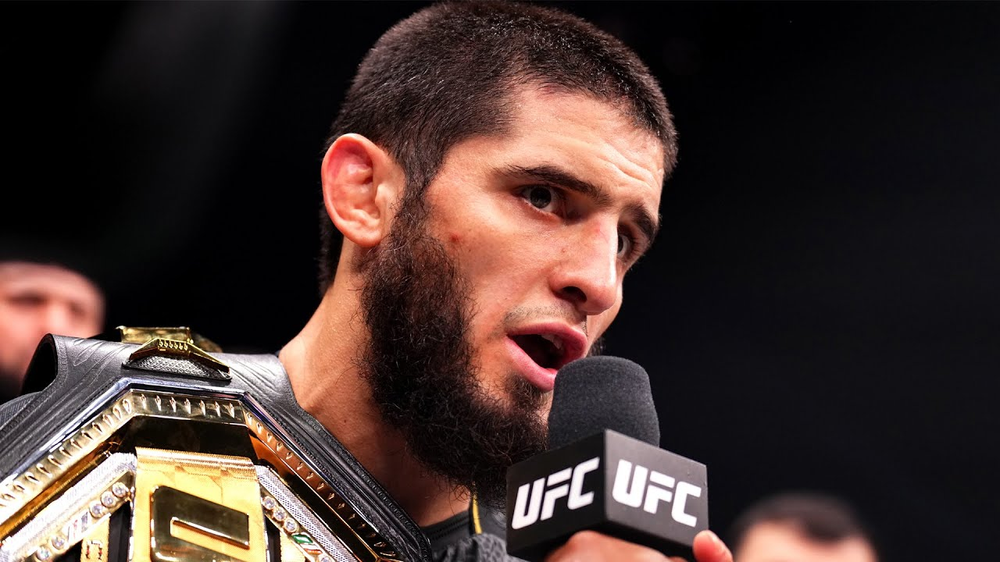

Islam Makhachev, the formidable UFC Champion hailing from Dagestan, Russia, is a force to be reckoned with in the world of mixed martial arts. Born on September 27, 1991, Makhachev began his professional MMA career in 2010, quickly showcasing his grappling expertise and striking prowess. Trained under the renowned coach Abdulmanap Nurmagomedov, Islam shares a strong connection with his close friend and mentor, the late Khabib Nurmagomedov.
Makhachev's journey to the top of the lightweight division has been marked by a series of impressive victories, often displaying a relentless fighting style coupled with a calm and composed demeanor inside the octagon. His grappling skills, particularly his Sambo background, set him apart as a well-rounded and dangerous opponent for anyone in his weight class.
Outside of the cage, Islam Makhachev is known for his humility and dedication to his craft. His commitment to continuous improvement and respect for the sport have earned him admiration from fans and fellow fighters alike. As Makhachev continues to climb the ranks, he leaves an indelible mark on the world of MMA, solidifying his legacy as a true champion.
